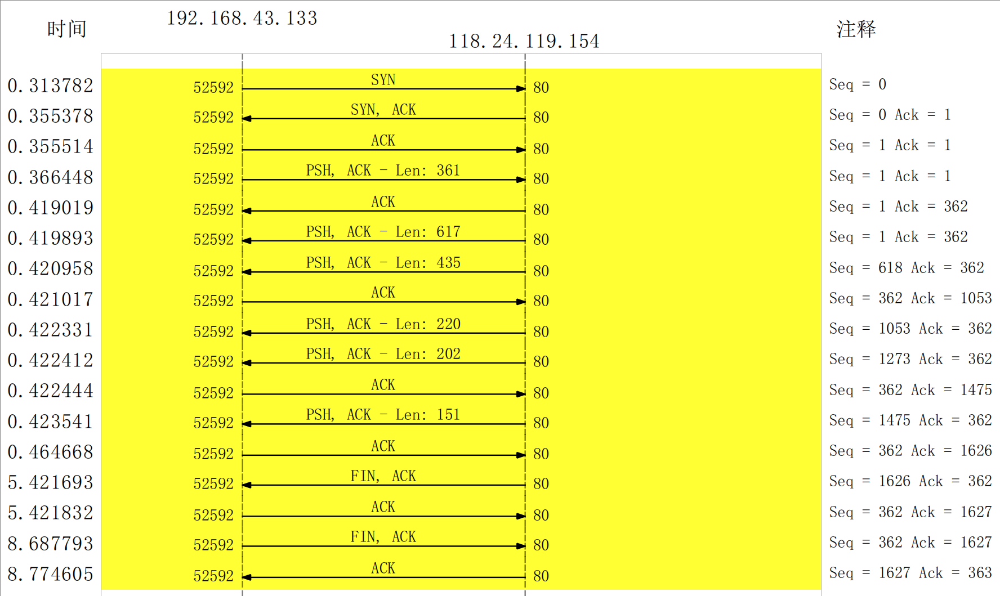

这里总结下TCP的三次握手，数据传输和四次分手过程

pdf文件地址TCP图解
TCP头部

- 来源连接端口（16位长）－识别发送连接端口
- 目的连接端口（16位长）－识别接收连接端口
- 序列号（seq，32位长）
- 如果含有同步化旗标（SYN），则此为最初的序列号；第一个数据比特的序列码为本序列号加一。
- 如果没有同步化旗标（SYN），则此为第一个数据比特的序列码。
- 确认号（ack，32位长）—期望收到的数据的开始序列号。也即已经收到的数据的字节长度加1。
- 数据偏移（4位长）—以4字节为单位计算出的数据段开始地址的偏移值。
- 保留（3比特长）—须置0
- 标志符（9比特长）
- NS—ECN-nonce。
- CWR—Congestion Window Reduced。
- ECE—ECN-Echo有两种意思，取决于SYN标志的值。
- URG—为1表示高优先级数据包，紧急指针字段有效。
- ACK—为1表示确认号字段有效
- PSH—为1表示是带有PUSH标志的数据，指示接收方应该尽快将这个报文段交给应用层而不用等待缓冲区装满。
- RST—为1表示出现严重差错。可能需要重现创建TCP连接。还可以用于拒绝非法的报文段和拒绝连接请求。
- SYN—为1表示这是连接请求或是连接接受请求，用于创建连接和使顺序号同步
- FIN—为1表示发送方没有数据要传输了，要求释放连接。
- 窗口（WIN，16位长）—表示从确认号开始，本报文的接受方可以接收的字节数，即接收窗口大小。用于流量控制。
- 校验和（Checksum，16位长）—对整个的TCP报文段，包括TCP头部和TCP数据，以16位字进行计算所得。这是一个强制性的字段。
- 紧急指针（16位长）—本报文段中的紧急数据的最后一个字节的序号。
- 选项字段—最多40字节。每个选项的开始是1字节的kind字段，说明选项的类型。
- 0：选项表结束（1字节）
- 1：无操作（1字节）用于选项字段之间的字边界对齐。
- 2：最大报文段长度（4字节，Maximum Segment Size，MSS）通常在创建连接而设置SYN标志的数据包中指明这个选项，指明本端所能接收的最大长度的报文段。通常将MSS设置为（MTU-40）字节，携带TCP报文段的IP数据报的长度就不会超过* MTU（MTU最大长度为1518字节，最短为64字节），从而避免本机发生IP分片。只能出现在同步报文段中，否则将被忽略。
- 3：窗口扩大因子（4字节，wscale），取值0-14。用来把TCP的窗口的值左移的位数，使窗口值乘倍。只能出现在同步报文段中，否则将被忽略。这是因为现在的TCP接收数据缓冲区（接收窗口）的长度通常大于65535字节。
- 4：sackOK—发送端支持并同意使用SACK选项。
- 5：SACK实际工作的选项。
- 8：时间戳（10字节，TCP Timestamps Option，TSopt）
- 发送端的时间戳（Timestamp Value field，TSval，4字节）
- 时间戳回显应答（Timestamp Echo Reply field，TSecr，4字节）*
TCP连接过程
第一步：客户端第一次会将标志位的第8位（syn）置1，服务器端接受到这个包后，就知道有人想要链接自己。
第二步：服务器会回一个包，并把标志位的第5位（ACk）和第八位（SYN）都置1，因为第一步发过来的序列号（seq）为0，所以第二步回的这个包的确认号（ack）为(seq+1)0+1，这里的seq是上一个从客户端接收到的包的seq） 注意这个ack不是标志位的ACK，这个是来确认对方发过来的包的序列
第三步：客户端仅把标志位的第5位（ACk）置1，然后 确认号（ack）为(seq+1)0+1（这里的seq是上一个从服务器接收到的包的seq），自己的seq值则为1了
seq，是自己自己确认发送包的序列，因为tcp可能会把大的消息切成一个一个的数据段，传输过去再按序列号拼接成原来的完整数据。因为这个ack这个机制所以说tcp是可靠连接。。。
数据传输
这个没什么特别的，一边发一边回复ack确认。如果没收到ack启动重传机制
TCP断开过程
我们说所说的四次分手
主要是FIN标志位，如果一个报文段FIN标志位置1，则说明他要发送的数据发完了，他要关闭这个会话了。
直接看上面图上最后四步，断开是两个人的事。如果只有一边发送了FIN报文，这个时候还是可以传输数据的，因为还没有完全断开，只有双方互发了FIN报文，并且都收到了相应的ACK确认报文，这就完全断开了。本次TCP会话也就完全结束了。